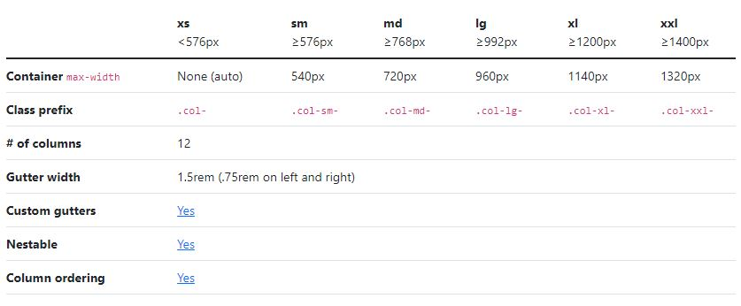
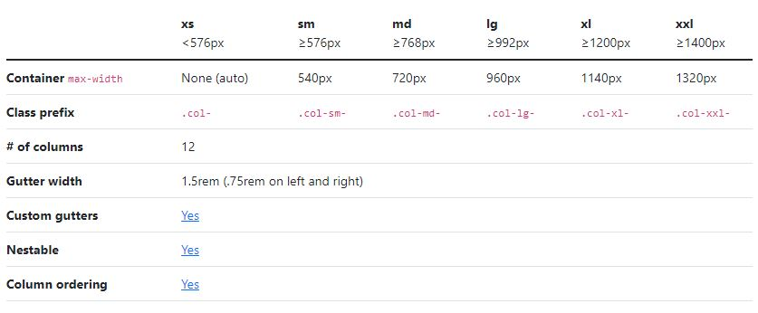

Бутстрап сетки
class="container" - основной класс который делает небольшие отступы слева и справа , и в котором уже прописаны @media которые адаптируют нашу страничку под разные расширения экранов
class="container-fluid" - работает так же как и класс контейнер, но убирает полностью отступы по бокам
class='row' - для создания сеток нужно создать дивы у котрых будет клас row. Когда мы создаем такой клас - то мы как бы создаем один ряд. И какждый клас ров будет распологаться друг под дружкой. Так же в каждом ряде мы можем создать столбцы. В каждом ряде максимум 12 столбцов

class='col' - чтобы создать столбец в нашем ряде создаем еще один див с тегом кол(столбец). Таких тегов внутри класса ров можно создать до 12 шт и они будут занимать одинаковое количество пикселей по ширине. Если у остальных кол есть цыфра то последний можно оставить без цыфры и он автоматически подстроится под нужную ширину
class="col-1" - наш столбец в ряде будет занимать одно место (кратное 12)
class="col-6" - будет занимать половину ряда
class="col-12" - будет занимать весь ряд
и так далее
Внутри нашей сетки ров можно создать еще одну сетку и это очень удобно для построение сайта.
Если нам нужно поменять количество col-3 чтобы в расширении экрана скажем 600 пикселей он занимал не 3 а col-2 существуют дополнительные классы:

Чтобы добавить отступ слева нужно прописать такой класс как offset-1 offset-2 offset-6 и так далее. Число после офсета означает какое количество блоков мы пропустим прежде чем поставим наш блок для которого мы это все прописали. И с оффсетами так же действует правило адаптивности где мы можем указать что если ширина эрана больше 1200 пикселей то мы сделаем отступ слева размером с 3 блока: class='offset-xl-3'
Так как фреймворк бутстрап теперь работает на флексбоксе (раньше работал на флоате) мы можем пользоваться такими класами которые соответствуют характеристиками флекс бокса.
Например у нас есть ROW в котором еще остается несколько пустых колонок и мы можем воспользоваться классом который называется justify-content-:
justify-content-start - размещение блоков по умолчанию с левой стороны
justify-content-end - блоки будут прижаты к правой стороны
justify-content-center - распологаться по центру
justify-content-around - по центру с равными отступами по обе стороны (двойные отступы между блоками)
justify-content-between - выравнивание на всю ширину блока с дополнительными отступами между собой
align-items- тоже доступно в класах фреймворка - выравнивание элементов (прижимает к верху или к низу) доступно для элементов класса ROW:
align-items-end - по вертикали блоки прижались к низу
align-items-start - блоки прижаты к верху
align-items-center - Центрировать элементы в поперечной оси
align-items-baseline - Выровняйте базовые линии предметов
align-items-stretch - Растянуть предметы, чтобы соответствовать
align-self - доступно для элементов класса COLL - если нам нужно поменять как одна колонка будет размещаться: align-self-end align-self-start align-self-center и так далее
class="container-fluid" - работает так же как и класс контейнер, но убирает полностью отступы по бокам
class='row' - для создания сеток нужно создать дивы у котрых будет клас row. Когда мы создаем такой клас - то мы как бы создаем один ряд. И какждый клас ров будет распологаться друг под дружкой. Так же в каждом ряде мы можем создать столбцы. В каждом ряде максимум 12 столбцов
class='col' - чтобы создать столбец в нашем ряде создаем еще один див с тегом кол(столбец). Таких тегов внутри класса ров можно создать до 12 шт и они будут занимать одинаковое количество пикселей по ширине. Если у остальных кол есть цыфра то последний можно оставить без цыфры и он автоматически подстроится под нужную ширину
class="col-1" - наш столбец в ряде будет занимать одно место (кратное 12)
class="col-6" - будет занимать половину ряда
class="col-12" - будет занимать весь ряд
и так далее
col-1 col-lg-3
col-2
col-6 col-lg-3
col-3
col-8 offset-1
col
col-1
col-12
Внутри нашей сетки ров можно создать еще одну сетку и это очень удобно для построение сайта.
Если нам нужно поменять количество col-3 чтобы в расширении экрана скажем 600 пикселей он занимал не 3 а col-2 существуют дополнительные классы:

Чтобы добавить отступ слева нужно прописать такой класс как offset-1 offset-2 offset-6 и так далее. Число после офсета означает какое количество блоков мы пропустим прежде чем поставим наш блок для которого мы это все прописали. И с оффсетами так же действует правило адаптивности где мы можем указать что если ширина эрана больше 1200 пикселей то мы сделаем отступ слева размером с 3 блока: class='offset-xl-3'
Так как фреймворк бутстрап теперь работает на флексбоксе (раньше работал на флоате) мы можем пользоваться такими класами которые соответствуют характеристиками флекс бокса.
Например у нас есть ROW в котором еще остается несколько пустых колонок и мы можем воспользоваться классом который называется justify-content-:
justify-content-start - размещение блоков по умолчанию с левой стороны
justify-content-end - блоки будут прижаты к правой стороны
justify-content-center - распологаться по центру
justify-content-around - по центру с равными отступами по обе стороны (двойные отступы между блоками)
justify-content-between - выравнивание на всю ширину блока с дополнительными отступами между собой
align-items- тоже доступно в класах фреймворка - выравнивание элементов (прижимает к верху или к низу) доступно для элементов класса ROW:
align-items-end - по вертикали блоки прижались к низу
align-items-start - блоки прижаты к верху
align-items-center - Центрировать элементы в поперечной оси
align-items-baseline - Выровняйте базовые линии предметов
align-items-stretch - Растянуть предметы, чтобы соответствовать
align-self - доступно для элементов класса COLL - если нам нужно поменять как одна колонка будет размещаться: align-self-end align-self-start align-self-center и так далее